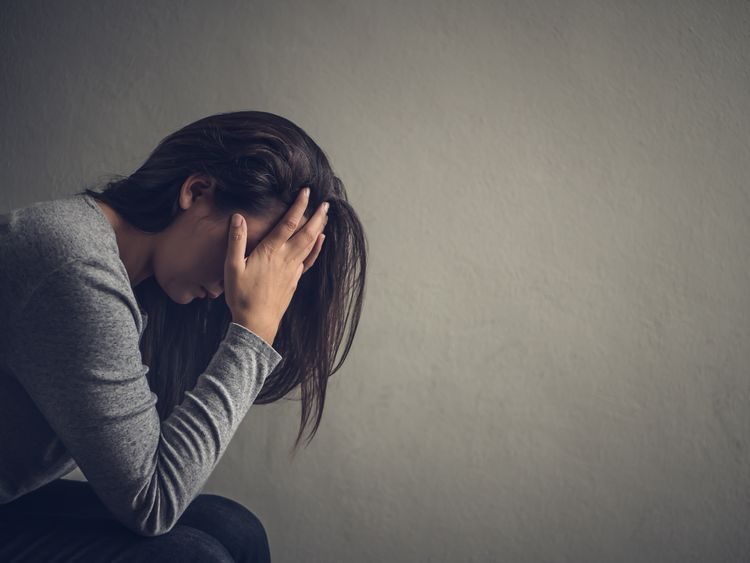

LIFE
Sign In | Register
LIFE (Living It Fully Everyday) is a website that looks for ways to decompress, relax and focus on mental
health and wellbeing for individuals deeply affected by the disasters of COVID-19. While many of us are feeling dissociated with life, and deeply unmotivated,
LIFE, was made to support such individuals by the us, the local council to help manage stress and anxiety and guide individuals down the path of becoming a productive and healthy individual.

LIFE offers essential services to help individuals have a peaceful mind, including; Yoga, Meditation, Stretching and Healthy habits to fulfull a productive life.
These services are aimed to decrease stress and anxiety, and build a healthy lifestyle that every individual would be happy with.

Expert research has shown that "stress, confusion and anger" are the most common results of the pandemic, through the Australian Institute of Health and Welfare (Australian Government).
Stress and anxiety are one of the most leading cause of deaths in suicide, and in aim to decrease these numbers LIFE, was built to decompose such feelings and improve mental health.